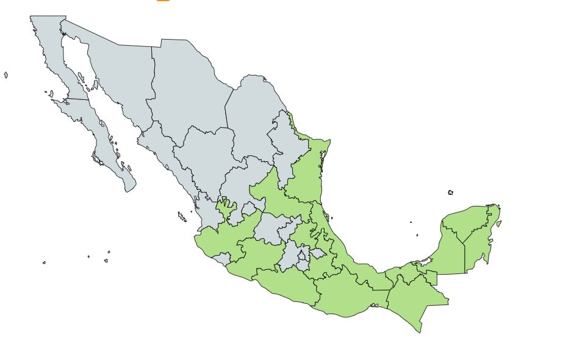

Descripcion:
Árbol de hasta 15 mts de altura, con el tronco recto, escamoso y muy ramificado en la copa; las flores son pequeñas de color crema-verdoso muy aromáticas; los frutos son cápsulas drupáceas de 1 a 1.5 cms. Es una especie caducifolia y melífera. La chacá es un árbol realmente hermoso; aunque tiene muchos uso y propiedades medicinales, su solo valor ornamental justifica su presencia en los jardines, ya que es extremadamente vistoso, tanto en el verano, cuando su copa se extiende y su sombra mitiga el calor del ambiente, como en el invierno, cuando por lo general pierde el follaje, y su tronco y ramas desnudas y retorcidas dan una apariencia metálica y lustrosa muy decorativa. Además, su cultivo no exige mayores cuidados, ya que tolera la sequía y terrenos poco fértiles, y se reproduce con gran facilidad con solo plantar estacas de sus ramas en el suelo o mediante semillas. Sus flores son de gran atractivo para las abejas y sus frutos color rojo son alimento para muchas aves.
Usos Medicinales:
Se utiliza el cocimiento de hojas y tallos para calmar dolores e inflamaciones, asma, tos, tos ferina, como expectorante y sudorífico, sedante, para el sarampión, fiebre, lavar heridas, resfriados, infecciones por hongos, trabajo de parto, infecciones intestinales, bajar de peso (obesidad), gota, reumatismo, purificar la sangre, sangrado nasal, salpullido, quemaduras por el sol, picaduras de insectos, garrapatas, mordeduras de víbora (la corteza), estreñimiento (purgante), gastritis, diarreas, dolores dentales, infecciones bucales, enfermedades venéreas, inflamación de los riñones, y otros padecimientos.

Contra-indicaciones:
Sin información.
